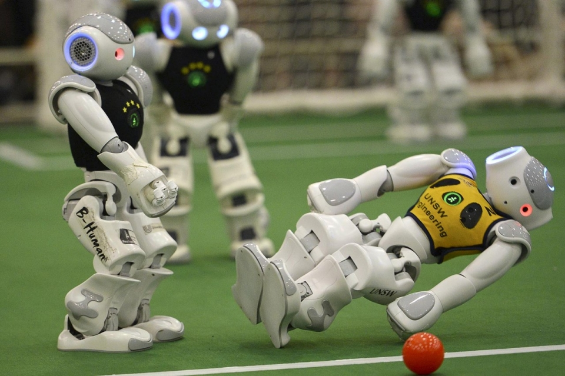
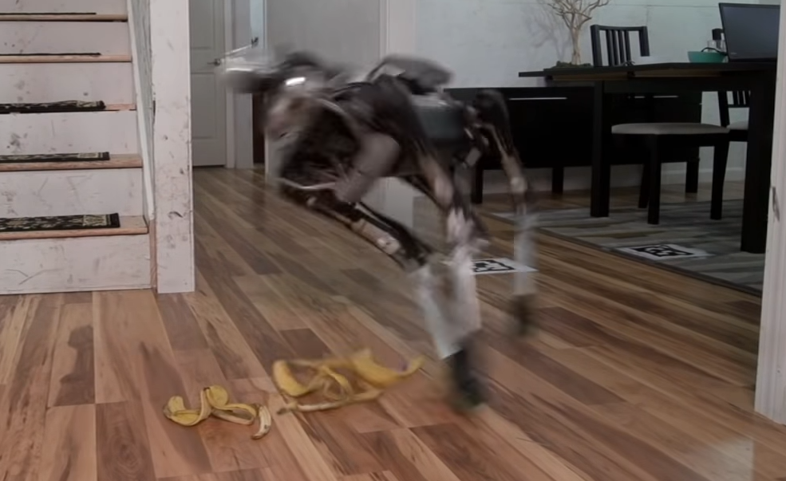
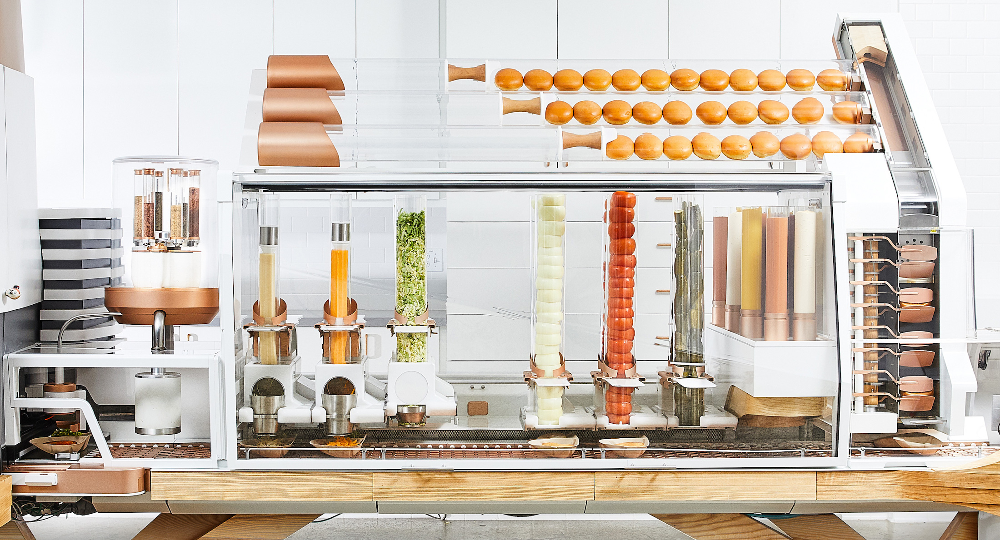
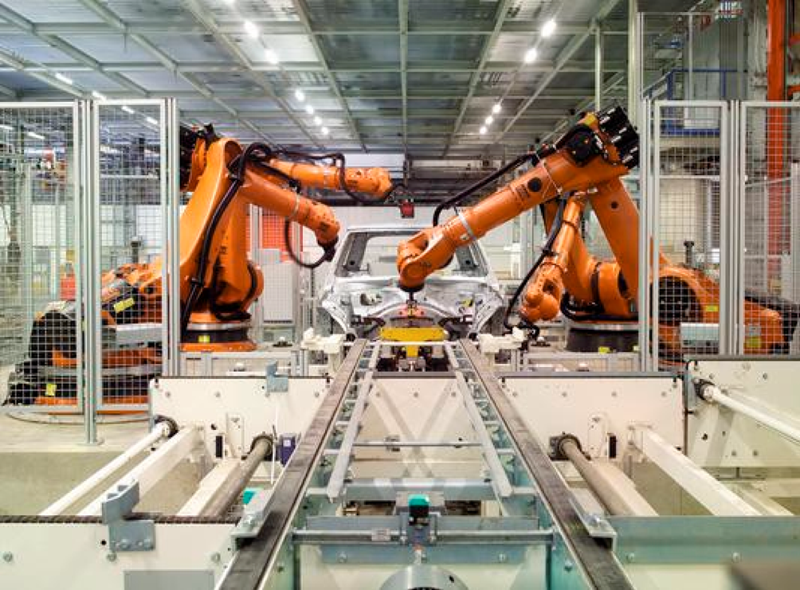

Robots are able to do many things that can assist us and simplify our lives. Robots can be used to do tasks that would be incredibly boring and tedious for humans, they are also able to be used to access areas that would have been extremely dangerous or impossible to access for humans. Robots can furthermore assist humans to lift or do things that would have been difficult or impossible without any human assistance. There are also robots designed to entertain us and make us laugh (ASIMO falling when walking up stairs or NAO robots playing soccer). Robotic technology is quite advanced now and robots are able to balance by themselves and move autonomously (with the use of sensors).
SPOT, a robot from Boston Dynamics, builds upon its predecessors (BigDog and LS3) it is both smaller (dog-sized instead of mule-sized) and significantly lighter (24kgs compared to 450kgs). In contrast, SPOT cannot lift as much weight as its predecessors could. It, however, makes up for it in its weight, size, and expandability. Some of the proposed applications for SPOT are building inspections for construction sites, tunnel inspection in the mining industry as well as healthcare, where SPOT can deliver food and medicine, as well as disinfect rooms. SPOT is currently being used in Singapore to help enforce social distancing during the Covid-19 outbreak. The military will more than likely use robots like these in the future. This is not the first time robots have been used by the military, LS3, a predecessor of SPOT, was used to help deployed squads.
With the advancements in microprocessors and the drop in the price of sensors, robots are getting cheaper and more powerful. Processors have also become more powerful and efficient than before. A high-end consumer CPU previously had between 4-8 cores, now there are CPUs that offer as many as 64 cores and 128 threads.

Robots are able to analyze and make decisions from sensor data faster than in the past, lidar (Light Detection and Ranging) sensors are used to make this possible, more companies are making lidars, competing against each other to make the most powerful lidar sensors while keeping the costs low, so low in fact, that lidar is now a feature in the 2020 iPad Pros, something that would have been impossible a few years ago. With the costs of these components going down, it has become cheaper than ever before to get into robotics.
Robots are also being used in the food industry. Spyce, a restaurant in Boston, MA, has the first robotic that can cook complex foods, they do have staff that prepares the ingredients and garnish the dishes, but the robots do all the cooking. People order the food on the store computers, and the robots make their meals. Creator is a San Francisco based burger join that makes burgers using a robot, the robot slices the bun, puts sauces on it, cuts the burger toppings to order, grates cheese for the burger, and the meat gets ground and cooked to order, the robot then assembles that burger. It can make a burger in around 30 seconds, this robot does it without needing any human interaction. In CES 2019, a bread-baking robot was showed off, these sorts of robots could be used in bakeries so that bakers can focus on other things that are more challenging, like making different types of bread and pastries and leave the loaves of bread for the robots to bake.
These robots are amazing, but there are still some problems with them, while the Spyce robot can prepare food, it cannot prepare foods that it is not familiar with. In the case of the robot in Creator, it can only make burgers. Soon however, robots may become a staple in kitchens.
Robotics will lead to a loss of jobs in certain fields in the future, while mechanics and software developers may become more in demand. Farmhands, factory workers, bakers, cooks, and jobs that are repetitive and do not pay as much could possibly not exist anymore.
In the agriculture industry, some robots can target and spray weeds entirely autonomously. Since these robots run on solar power, they can keep working as long as the sun is out. There are also large machines that use machine learning and robotics to apply herbicide to only the weeds, and the developers claim that it uses only a tenth of the usual amount of herbicide used compared to traditional means. When it comes to picking fruits, there are robots that can pick citrus fruits and ones that can automatically harvest strawberries. While this is fantastic news for farmers, people who rely on fruit picking, or those that are farmhands, could be out of a job. It would not be surprising for farms to have less than ten people during harvest time in a few years.

In the food industry, jobs that were common just decades ago are being replaced by robots; there are robots that can ice cakes and muffins. In car manufacturing, robots have also replaced people. It allows cars to be built to a higher standard and lowers the cost for the company; hundreds of jobs have also been lost because of this. The people affected by robotics technology are usually those that do manual or unskilled work. A lot of these workers, especially ones that work in factories, have been replaced by robots and machines, and at this rate, it is only going to get worse.
Robots are becoming more common now than ever before, they can do many jobs, and in the future, many jobs that were done by humans may not exist anymore. However, robotics can also create new jobs and opportunities, as more people will be needed to develop and maintain these robots. This means that there are more ways to get into this industry, and the fact that it keeps on growing means that it will not be as challenging to find employment in this field compared to in the past.
Robots will also be more commonplace in the home, and this means that people can do more important things and let the robots take care of the chores. Appliances like dishwashers save plenty of time, however, with robotics, tasks like cooking may become less of a necessity and more of a hobby.
Robots are being developed that try to identify different types of clothes, fold and sort them according to what type they could be, currently these robots fail at that task but in the future, it will not pose a problem for them. This will also make life a lot easier for many people.

However, on the flip side, the introduction of robotics in factories and other industries would be a negative for my family members, they have seen many people lose their jobs because a robot was introduced that was able to do their job faster and more efficiently. With faster, smarter, and more efficient robots, harder tasks can be done by robots. Amazon has been using robots in their sorting facilities to move packages around, but they still need to be monitored by humans. For postal services, large robots have been made that can sort packages and letters. Not as many people are needed in these sorting facilities anymore. For robots that can work in factories, robotic forklifts have been made, and while they may not be as common as some other robots, they will probably get cheaper and more accessible in time, potentially putting some friends and family of mine out of a job.
Team 18 - Creative Protocol© 2020